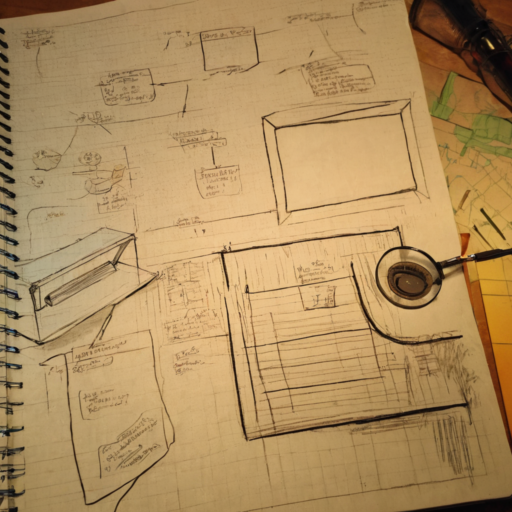

I keep an eye on what is moving in the Chia NFT space, so when a supply countdown post crossed my feed I stopped to read it twice. Not because the numbers are confirmed anywhere I can verify, but because it is a good example of how NFT projects try to create momentum in a small ecosystem.
@ChiaMisFitz posted that only 840 out of 10,000 Misfitz are left, called the remaining holders and buyers "absolute savages," and teased that something is planned for holders and traders. The post pushes urgency, asking whether any will be left going into the weekend and suggesting people grab them while they are still cheap. There were no links in the post itself, no mint site, no marketplace link, no roadmap doc. Just the claim and the energy behind it.

Chia's NFT scene is small compared to the bigger chains, which means community energy and posts like this one carry real weight. A collection selling down toward its last few hundred pieces is worth noticing, whether you collect, trade, or just like watching how projects build momentum on a chain you care about. It is also a decent case study in how scarcity messaging works in practice, on any chain, not just Chia.
What it does: creates urgency around the remaining supply of a 10,000 piece collection and points at some kind of upcoming activity for current holders and traders.
Who it helps: the project team, if it moves remaining inventory, and early holders, if the promised plans for holders and traders turn into something real.
What problem it solves: getting the last chunk of a collection into hands before a weekend, which is a pretty normal move for any NFT project trying to close out a mint or a secondary sell-off.
What still needs work: everything here is self-reported. The 840 number, the "savages" framing, and the teased plans are all claims from the post itself. There is no linked dashboard, mint page, or marketplace snapshot to check the count against, so treat the specific numbers as what the project is saying, not as something independently confirmed.
What I would test first: if you are curious, pull up the collection on a Chia NFT marketplace and look at the actual remaining count and recent trade history yourself before reacting to the post.
I like seeing Chia projects push their own momentum instead of waiting around for attention. That is exactly the kind of hustle a small ecosystem needs, and @ChiaMisFitz clearly knows how to write a post that gets people looking. The one thing I would flag gently is that the specific supply number is coming straight from the project with nothing to check it against yet, so I would just verify it myself before treating it as gospel. Beyond that, I am genuinely curious what the "plans for holders and traders" turn out to be.
Worth watching whether the teased plans for holders and traders actually show up this weekend, and whether the supply count lines up with what shows on-chain or on a marketplace. No guarantees either way, just a collection worth keeping an eye on if you are already paying attention to Chia NFTs.
Source: X post by @ChiaMisFitz, https://x.com/i/web/status/2077824708930925053, retrieved 2026-07-16. No external references were included in the source post.